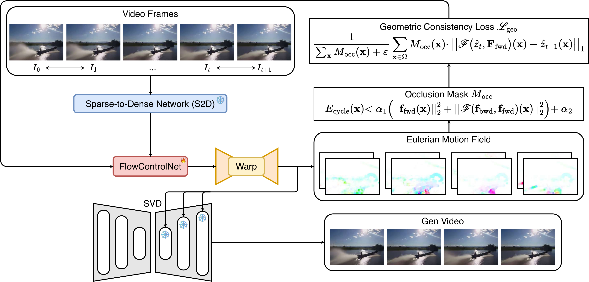
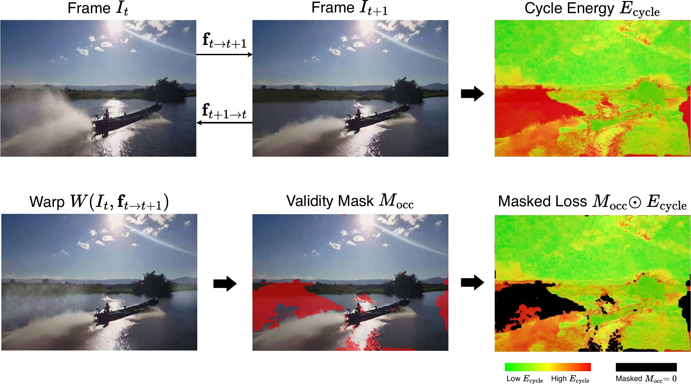
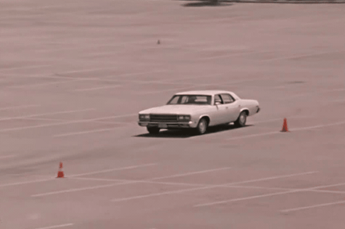
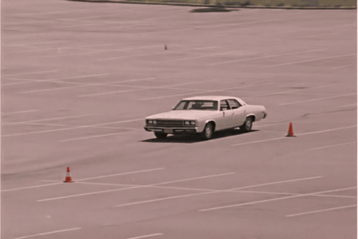
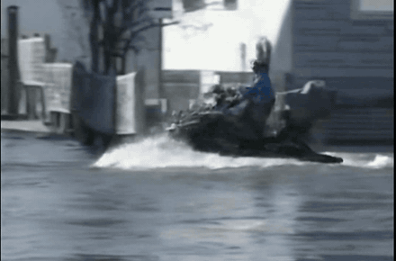
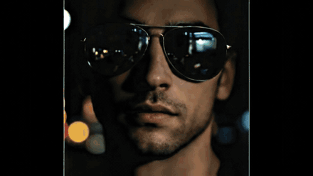

Recent advancements in image animation have utilized diffusion models to breathe life into static images. However, existing controllable frameworks typically rely on Lagrangian motion guidance, where optical flow is estimated relative to the initial frame. This paper revisits the same optical-flow primitive through a more local supervision design: we use adjacent-frame Eulerian motion fields to guide generation, where the motion signal always describes a short temporal hop. This shift enables parallelized training and provides bounded-error supervision throughout the generation process. To mitigate the drift artifacts common in adjacent-frame generation, we introduce a Bidirectional Geometric Consistency mechanism, which computes a forward–backward cycle check to mathematically identify and mask occluded regions, preventing the model from learning incorrect warping objectives. Extensive experiments demonstrate that our approach accelerates training, preserves temporal coherence, and reduces dynamic artifacts compared to reference-based baselines.
Controllable image-animation frameworks typically rely on Lagrangian motion guidance: optical flow estimated relative to the initial frame. As the animation unfolds, displacements grow, brightness-constancy assumptions break, and valid correspondences vanish behind occlusions — so the supervision itself becomes noisy exactly when the model needs it most.
We revisit the same optical-flow primitive through a more local supervision design. Eulerian Motion Guidance (EMG) supervises generation with adjacent-frame motion fields, so the signal always describes a short temporal hop that stays inside the reliable, short-range regime of flow estimators — provably bounding per-step supervisory error. To stop stochastic drift in newly revealed regions, a Bidirectional Geometric Consistency (BGC) check computes forward–backward cycle energy and masks occluded pixels out of the loss, so the model is only ever supervised by geometrically valid correspondences.
Flow is anchored to the reference frame I₀. The vector grows with time, drifting outside the estimator’s reliable range — error accumulates without bound.
Flow is measured between consecutive frames Iₜ → Iₜ₊₁. Every supervision step is a short hop with bounded error — regardless of sequence length.
A formal analysis of error propagation in reference-anchored flow, and an Eulerian alternative whose per-step supervisory error stays bounded over arbitrarily long horizons.
A forward–backward cycle check derives an occlusion mask that gates unreliable gradients in dis-occluded regions, eliminating ghosting and warping artifacts.
Adjacent-frame formulation admits batched flow estimation — O(1) iteration time in sequence length, a 2.7× training speedup at T = 24 on frozen SVD backbones.
Ground-truth frames pass through a frozen sparse-to-dense network and a trainable FlowControlNet that injects Eulerian motion features into a frozen Stable Video Diffusion backbone. Motion fields for all adjacent pairs are estimated in one batched pass, and the geometric-consistency loss is applied only where the occlusion mask certifies a valid correspondence.

Overall paradigm. Adjacent-frame Eulerian motion fields guide a frozen SVD backbone through the trainable FlowControlNet; the geometric-consistency loss ℒgeo is gated by the occlusion mask Mocc derived from forward–backward cycle energy.

Bidirectional Geometric Consistency. Forward and backward flows between It and It+1 yield a cycle energy Ecycle; pixels whose cycle error exceeds a motion-adaptive threshold are masked so dis-occluded regions never contribute incorrect warping supervision.
Identity preservation. Structure and texture stay intact under large articulated motion.
Complex dynamics. Boat, wake, and water reflections stay coherent over the full horizon.
Dis-occlusion under hand motion. Dough is pressed and revealed — no ghosting or hallucinated objects.
Showcase clips are motion renderings from the paper’s reference frames.
Reference-anchored baselines degrade as temporal distance grows — texture drift, identity collapse, hallucinated objects in dis-occluded regions. Watch the same input side by side: the baseline drifts, smears, and loses structure as the horizon grows, while EMG stays sharp and geometrically stable.

MOFA · Lagrangian
EMG · OursLong-horizon behavior vs. MOFA. Error accumulation in reference-anchored flow progressively warps and smears the scene; EMG keeps the car’s shape and texture across the full sequence.

ImageConductorTrajectory control vs. ImageConductor. Both methods follow the same user-drawn trajectory. The baseline’s rider progressively dissolves into blur and the scene loses structure; EMG keeps the rider’s geometry against the fast-moving water.

EMG · OursKeypoint-driven portrait animation vs. FactorPortrait. The baseline progressively blurs the dis-occluded mouth region and identity degrades. EMG’s Eulerian flux propagates texture from adjacent frames, keeping mouth detail sharp and identity stable.
Clips are illustrative reconstructions rendered from the paper’s reference frames to visualize the behavior documented in the paper’s figures and tables; the original method outputs are in the paper.
Evaluated on 100-frame generations — WebVid trajectory animation (1,000 test clips) and keypoint-driven portrait animation — against ten recent controllable baselines, under identical protocols.
| Method | Backbone | LPIPS ↓ | FID ↓ | FVD ↓ | CLIP-Cons ↑ | Ewarp ↓ | Pref. ↑ |
|---|---|---|---|---|---|---|---|
| DragNUWA | SVD | 0.2705 | 19.66 | 91.38 | 0.9302 | 4.12 | 89.2 [85.1, 93.3] |
| PoseTraj | SVD | 0.1704 | 12.22 | 77.69 | 0.9562 | 2.58 | 63.5 [58.2, 68.8] |
| MOFA | SVD | 0.2274 | 16.82 | 86.76 | 0.9390 | 3.45 | 78.4 [73.5, 83.3] |
| SG-I2V | SVD | 0.2490 | 18.24 | 89.07 | 0.9346 | 3.81 | 82.1 [77.5, 86.7] |
| I2VControl | MagicVideo-V2 | 0.2132 | 14.52 | 82.23 | 0.9476 | 3.10 | 71.3 [66.1, 76.5] |
| AnyTraj | DiT | 0.1989 | 13.75 | 80.71 | 0.9505 | 2.76 | 68.7 [63.2, 74.2] |
| ImageConductor | AnimateDiff | 0.1847 | 12.98 | 79.20 | 0.9534 | 2.51 | 65.2 [59.8, 70.6] |
| EMG (ours) | SVD | 0.1562 | 11.45 | 76.18 | 0.9591 | 1.84 | 92.3 [87.1, 97.5] |
| Method | CPBD ↑ | ArcFace ↑ | CLIP-Cons ↑ | Ewarp ↓ | Pref. ↑ |
|---|---|---|---|---|---|
| SadTalker | 0.3218 | 0.9188 | 0.9156 | 3.88 | 88.5 [84.1, 92.9] |
| MagicAnimate | 0.3852 | 0.9241 | 0.9288 | 2.95 | 83.7 [78.5, 88.4] |
| Cinemo | 0.3986 | 0.9315 | 0.9342 | 2.61 | 77.1 [71.8, 82.3] |
| MOFA | 0.4075 | 0.9293 | 0.9390 | 2.45 | 79.2 [74.3, 84.1] |
| Hallo | 0.3912 | 0.9331 | 0.9364 | 2.38 | 75.4 [70.1, 80.7] |
| Hallo3 | 0.4045 | 0.9389 | 0.9409 | 2.21 | 72.8 [67.2, 78.4] |
| FaceShot | 0.4178 | 0.9439 | 0.9455 | 2.15 | 68.1 [62.4, 73.8] |
| SVDP | 0.4310 | 0.9485 | 0.9486 | 2.08 | 64.3 [58.5, 70.1] |
| FactorPortrait | 0.4343 | 0.9491 | 0.9459 | 2.10 | 61.7 [55.9, 67.5] |
| EMG (ours) | 0.4576 | 0.9558 | 0.9591 | 1.52 | 94.4 [89.0, 99.7] |
Sequential flow estimation scales linearly with sequence length and bottlenecks training. Because Eulerian fields depend only on adjacent pairs, EMG estimates every field in one batched pass — per-iteration time is flat in T.
milliseconds per iteration vs. sequence length T · 4× NVIDIA H200
@article{nguyen2026eulerian,
title={Eulerian Motion Guidance: Robust Image Animation via Bidirectional Geometric Consistency},
author={Nguyen, Thong and Le, Khoi M and Nguyen, Cong-Duy and Tuan, Luu Anh and Ng, See-Kiong and Miao, Chunyan},
journal={arXiv preprint arXiv:2605.06280},
year={2026}
}